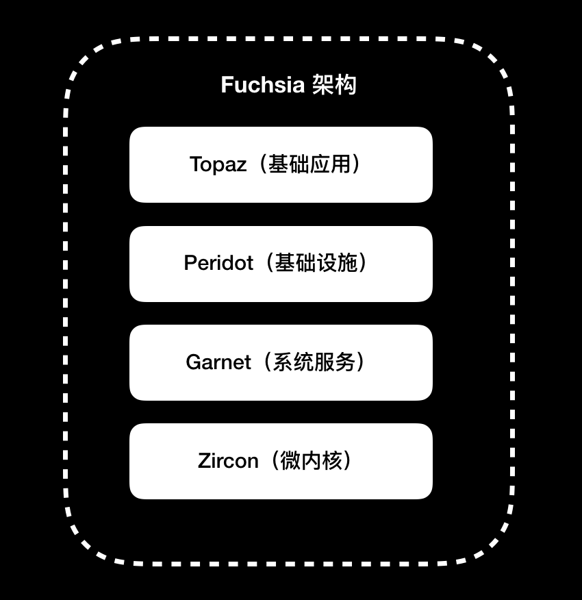

- 00 开篇词 锚定一个点，然后在这个点上深耕.md.html
- 01 建立你自己的iOS开发知识体系.md.html
- 02 App 启动速度怎么做优化与监控？.md.html
- 03 Auto Layout 是怎么进行自动布局的，性能如何？.md.html
- 04 项目大了人员多了，架构怎么设计更合理？.md.html
- 05 链接器：符号是怎么绑定到地址上的？.md.html
- 06 App 如何通过注入动态库的方式实现极速编译调试？.md.html
- 07 Clang、Infer 和 OCLint ，我们应该使用谁来做静态分析？.md.html
- 08 如何利用 Clang 为 App 提质？.md.html
- 09 无侵入的埋点方案如何实现？.md.html
- 10 包大小：如何从资源和代码层面实现全方位瘦身？.md.html
- 11 热点问题答疑（一）：基础模块问题答疑.md.html
- 12 iOS 崩溃千奇百怪，如何全面监控？.md.html
- 13 如何利用 RunLoop 原理去监控卡顿？.md.html
- 14 临近 OOM，如何获取详细内存分配信息，分析内存问题？.md.html
- 15 日志监控：怎样获取 App 中的全量日志？.md.html
- 16 性能监控：衡量 App 质量的那把尺.md.html
- 17 远超你想象的多线程的那些坑.md.html
- 18 怎么减少 App 电量消耗？.md.html
- 19 热点问题答疑（二）：基础模块问题答疑.md.html
- 20 iOS开发的最佳学习路径是什么？.md.html
- 21 除了 Cocoa，iOS还可以用哪些 GUI 框架开发？.md.html
- 22 细说 iOS 响应式框架变迁，哪些思想可以为我所用？.md.html
- 23 如何构造酷炫的物理效果和过场动画效果？.md.html
- 24 A_B 测试：验证决策效果的利器.md.html
- 25 怎样构建底层的发布和订阅事件总线？.md.html
- 26 如何提高 JSON 解析的性能？.md.html
- 27 如何用 Flexbox 思路开发？跟自动布局比，Flexbox 好在哪？.md.html
- 28 怎么应对各种富文本表现需求？.md.html
- 29 如何在 iOS 中进行面向测试驱动开发和面向行为驱动开发？.md.html
- 30 如何制定一套适合自己团队的 iOS 编码规范？.md.html
- 31 iOS 开发学习资料和书单推荐.md.html
- 32 热点问题答疑（三）.md.html
- 33 iOS 系统内核 XNU：App 如何加载？.md.html
- 34 iOS 黑魔法 Runtime Method Swizzling 背后的原理.md.html
- 35 libffi：动态调用和定义 C 函数.md.html
- 36 iOS 是怎么管理内存的？.md.html
- 37 如何编写 Clang 插件？.md.html
- 38 热点问题答疑（四）.md.html
- 39 打通前端与原生的桥梁：JavaScriptCore 能干哪些事情？.md.html
- 40 React Native、Flutter 等，这些跨端方案怎么选？.md.html
- 41 原生布局转到前端布局，开发思路有哪些转变？.md.html
- 42 iOS原生、大前端和Flutter分别是怎么渲染的？.md.html
- 43 剖析使 App 具有动态化和热更新能力的方案.md.html
- 用户故事 我是如何学习这个专栏的？.md.html
- 结束语 慢几步，深几度.md.html
- 捐赠
40 React Native、Flutter 等，这些跨端方案怎么选？
你好，我是戴铭。
为了一份代码能够运行在多个平台，从而节省开发和沟通成本，各公司都开始关注和使用跨端方案。目前，主流的跨端方案，主要分为两种：一种是，将 JavaScriptCore 引擎当作虚拟机的方案，代表框架是 React Native；另一种是，使用非 JavaScriptCore 虚拟机的方案，代表框架是 Flutter。
使用跨端方案进行开发，必然会替代原有平台的开发技术，所以我们在选择跨端方案时，不能只依赖于某几项指标，比如编程语言、性能、技术架构等，来判断是否适合自己团队和产品，更多的还要考虑开发效率、社区支持、构建发布、 DevOps、 CI 支持等工程化方面的指标。
所以说，我们在做出选择时，既要着眼于团队现状和所选方案生态，还要考虑技术未来的发展走向。
接下来，我就以React Native和Flutter为例，和你说明如何选择适合自己的跨端方案。
React Native框架的优势
跨端方案的初衷是要解决多平台重复开发的问题，也就是说，使用跨端方案的话，多个平台的开发者可以使用相同的开发语言来开发适合不同系统的App。
React Native 使用 JavaScript 语言来开发，Flutter 使用的是 Dart 语言。这两门编程语言，对 iOS 开发者来说都有一定的再学习成本，而使用何种编程语言，其实决定了团队未来的技术栈。
JavaScript 的历史和流行程度都远超 Dart ，生态也更加完善，开发者也远多于 Dart 程序员。所以，从编程语言的角度来看，虽然 Dart 语言入门简单，但从长远考虑，还是选择React Native 会更好一些。
同时，从页面框架和自动化工具的角度来看，React Native也要领先于 Flutter。这，主要得益于 Web 技术这么多年的积累，其工具链非常完善。前端开发者能够很轻松地掌握 React Native，并进行移动端 App 的开发。
当然，方案选择如同擂台赛，第一回合的输赢无法决定最后的结果。
Flutter框架的优势
除了编程语言、页面框架和自动化工具以外，React Native 的表现就处处不如 Flutter 了。总体来说，相比于React Native框架，Flutter的优势最主要体现在性能、开发效率和体验这两大方面。
Flutter的优势，首先在于其性能。
我们先从最核心的虚拟机说起吧。
React Native 所使用的 JavaScriptCore， 原本用在浏览器中，用于解释执行网页中的JavaScript代码。为了兼容 Web 标准留下的历史包袱，无法专门针对移动端进行性能优化。
Flutter 却不一样。它一开始就抛弃了历史包袱，使用全新的 Dart 语言编写，同时支持 AOT 和 JIT两种编译方式，而没有采用HTML/CSS/JavaScript 组合方式开发，在执行效率上明显高于 JavaScriptCore 。
除了编程语言的虚拟机，Flutter的优势还体现在UI框架的实现上。它重写了UI 框架，从 UI 控件到渲染，全部重新实现了，依赖 Skia 图形库和系统图形绘制相关的接口，保证了不同平台上能有相同的体验。
想要了解 Flutter 的布局和渲染，你可以看看这两个视频“The Mahogany Staircase - Flutter’s Layered Design”和“Flutter’s Rendering Pipeline”。
除了性能上的优势外，Flutter在开发效率和体验上也有很大的建树。
凭借热重载（Hot Reload）这种极速调试技术，极大地提升了开发效率，因此Flutter 吸引了大量开发者的眼球。
同时，Flutter因为重新实现了UI框架，可以不依赖 iOS 和 Android 平台的原生控件，所以无需专门去处理平台差异，在开发体验上实现了真正的统一。
此外，Flutter 的学习资源也非常丰富。Flutter的官方文档，分门别类整理得井井有条。YouTube 上有一个专门的频道，提供了许多讲座、演讲、教程资源。
或许，你还会说Flutter 包大小是个问题。Flutter的渲染引擎是自研的，并没有用到系统的渲染，所以App包必然会大些。但是，我觉得从长远来看，App Store对包大小的限制只会越来越小，所以说这个问题一定不会成为卡点。
除了上面两大优势外，我再和你说说Flutter对动态化能力的支持。
虽然 Flutter 计划会推出动态化能力，但我觉得动态化本身就是一个伪命题。软件架构如果足够健壮和灵活，发现问题、解决问题和验证问题的速度一定会非常快，再次发布上线也能够快速推进。而如果软件架构本就一团糟，解决问题的速度是怎么也快不起来的，即使具有了动态化能力，从解决问题到灰度发布再到全量上线的过程也一定会很曲折。
所以，我认为如果你想通过动态化技术来解决发布周期不够快的问题的话，那你首先应该解决的是架构本身的问题。长远考虑，架构上的治理和优化带来的收益，一定会高于使用具有动态化能力的框架。
当然，如果你选择使用动态化能力的框架，是抱着绕过App Store审核的目的，那就不在本文的讨论范围之内了。
如何选择适合自己的跨端方案？
看到这，你一定在想，跨端方案不是只有 Rect Native 和 Flutter，还有小程序、快应用、Weex 等框架。没错，跨端方案确实有非常多。
但，我今天与你分享的 React Native 代表了以 JavaScriptCore 引擎为虚拟机的所有方案，对于这一类方案的选择来说，道理都大同小异。只要你打算转向前端开发，选择它们中的哪一个方案都差不多，而且方案间的切换也很容易。
着眼未来，决定跨端方案最终赢家的关键因素，不是编程语言，也不是开发生态，更不是开发者，而是用户。
如果谷歌的新系统 Fuchsia 能够如谷歌所计划的五年之内应用到移动端的话，那么五年后即使使用 Fuchsia 的用户只有10%，你的 App 也要去支持 Fuchsia。Fuchsia 系统的最上层就是 Flutter，这时使用 Flutter 来开发 App就成了首选。而Flutter 本身就是一种跨端方案，一旦使用Flutter开发成为团队的必选项，那么其他技术栈就没有存在的价值了。
其实，我本人还是很看好 Fuchsia 系统的。它的内核是 Zircon，Fuchsia 是整个系统的统称，在 Fuchsia 技术的选择上，谷歌选择了微内核、优于 OpenGL 高内核低开销的图像接口 Vulkan、3D 桌面渲染 Scenic、Flutter 开发框架。谷歌的打算是，三年内在一些非主流的设备上对 Fuchsia 内核进行完善，待成熟后推向移动端。
Fuchsia 架构分为四层，包括微内核的第一层 Zircon，提供系统服务的第二层 Garnet，用户体验基础设施的第三层 Peridot，Flutter所在基础应⽤的第四层 Topaz。结合 Android 系统的经验，在设计架构之初，谷歌就考虑了厂商对深度定制的诉求，使得每层都可以进行替换，模块化做得比 Android系统更加彻底。
Fuchsia 架构，如下图所示：

你可以通过这个视频，查看Fuchsia 最近的动向。如果你有 Pixel 3 XL 手机，可以动手尝试下。你可以点击这个链接，来查看支持 Pixel 3 XL 的 Fuchsia 项目。Fuchsia 官方 Git 仓库的地址是https://fuchsia.googlesource.com，你可以点击查看其源码。
当然，不管操作系统多么牛，最后还要由用户来选。
所以，跨端技术方案的赢家是谁，最终还是要看使用移动设备的用户选择了谁，就好像游戏机市场中的 Nintendo Switch 和 PlayStation Vita。PlayStation Vita 在硬件、性能、系统各方面都领先 Nintendo Switch，但最终游戏开发者还是选择在 Nintendo Switch 上开发，而这其实都取决于购买游戏机的玩家。当 Nintendo Switch 成为了流行和热点以后，所有的游戏开发者都会跟着它走。
虽然我们不能决定未来，但我们可以去预测，然后选择一款大概率会赢的跨端框架，以此来奠定自己的竞争力。
总结
在今天这篇文章中，我将跨平台方案分成了两种：一种是，将 JavaScriptCore 引擎当作虚拟机的方案，代表框架是 React Native；另一种是，使用非 JavaScriptCore 虚拟机的方案，代表框架是 Flutter。
然后，在此基础上，我从编程语言、性能、开发效率和体验等方面和你分析了这两类方案。但是，选择一款适合自己团队的跨平台开发方案，仅仅考虑这几个方面还不够，我们还要着眼于未来。
在我看来，从长远考虑的话，你可以选择 Flutter作为跨平台开发方案。但是，最终 Flutter 是否能成功，还要看谷歌新系统 Fuchsia 的成败。
课后作业
如果最终 Fuchsia 失败了，而 iOS 继续突飞猛进，SwiftUI也支持跨端了，那你也就不用换技术栈了，继续使用 Swift 开发就好了。你对此是什么看法呢？
感谢你的收听，欢迎你在评论区给我留言分享你的观点，也欢迎把它分享给更多的朋友一起阅读。-
© 2019 - 2023 Liangliang Lee. Powered by gin and hexo-theme-book.